È stata tra le prime console a utilizzare le cartucce come metodo di distribuzione dei giochi ed
è anche ricordata come la prima console di successo: ne sono stati infatti venduti circa
30 milioni di esemplari, una delle console più longeve di tutti i tempi.
Furono realizzati per la console più di 550 giochi e vennero vendute più di 120 milioni di cartucce,
con prezzi che oscillavano fra i 12 e i 35 dollari.
Atari 5200
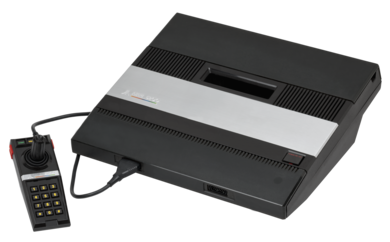
Produttore:
Atari
Commercializzazione:
–
Paese di produzione:
Stati Uniti d'America
Descrizione:
L'Atari 5200 SuperSystem è una console da tavolo a colori che venne creata per competere con
la console Intellivision di Mattel ma dovette poi fronteggiare anche la concorrenza del ColecoVision,
che venne messo in commercio poco dopo la 5200.
Nonostante fosse superiore all'Intellivision non riuscì a tenere testa al ColecoVision che,
nel giro di pochi mesi, superò le vendite della nuova console Atari.
La 5200 ebbe scarso successo anche per via di alcuni errori di marketing e di progettazione e della sua massa
imponente. Alla fine l'Atari 2600 che doveva inizialmente sostituire finì col superarla in longevità a causa
del rapido declino che ebbe la 5200: ne fu annunciato il ritiro nel 1984 durante la presentazione della sua
erede Atari 7800.
Atari LYNX
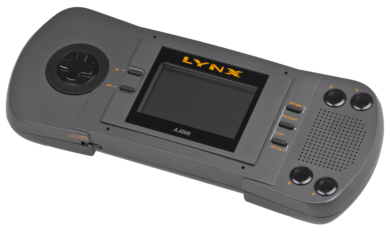
Produttore:
Atari
Commercializzazione:
–
Paese di produzione:
Stati Uniti d'America
Descrizione:
L'Atari Lynx è una console portatile sviluppata da Atari nel 1989, la prima console portatile con vero
schermo a colori al mondo. Era diretta concorrente del Game Boy, console portatile monocromatica sviluppata
da Nintendo nello stesso anno, e del Game Gear a colori prodotto da SEGA successivamente; sebbene fosse
tecnicamente superiore, venne sconfitta commercialmente da entrambe e uscì di produzione nel 1995.
Atari JAGUAR
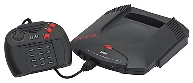
Produttore:
Atari
Commercializzazione:
–
Paese di produzione:
Stati Uniti d'America
Descrizione:
L'Atari Jaguar è una console per videogiochi da tavolo presentata come una potente piattaforma di nuova
generazione, è stata spesso definita come "Il primo sistema a 64 bit"; il fatto che fosse effettivamente a
64 bit venne contestato dai media, ma dal punto di vista di alcuni sviluppatori esperti sarebbe corretto.
La console si dimostrò tuttavia un flop commerciale, decretando definitivamente il ritiro dal mercato delle
console da parte di Atari.
NES
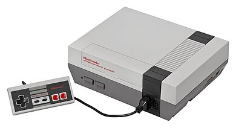
Produttore:
Nintendo
Commercializzazione:
–
Paese di produzione:
Giappone
Descrizione:
Il Nintendo Entertainment System (NES), noto in Giappone con il nome di FamiCom, è
da molti considerato il sistema che ha risollevato l'industria dei videogiochi dopo la crisi del 1983,
soprattutto grazie al successo di titoli come Super Mario Bros, The Legend of Zelda e Metroid, di livello
qualitativo superiore a quello dell'epoca; la console ha inoltre introdotto un modello
lavorativo oggi adottato da tutti, ovvero quello di concedere a terze parti le licenze per lo sviluppo dei
software.
Considerata una delle più importanti console videoludiche della storia, nel 1995, anno in cui fu tolta
definitivamente dal commercio, raggiunse quasi le 62 milioni di unità vendute, diventando la macchina
da gioco più venduta della sua epoca. Nel 2009 il sito IGN l'ha definita la migliore console videoludica
di tutti i tempi.
Game Boy
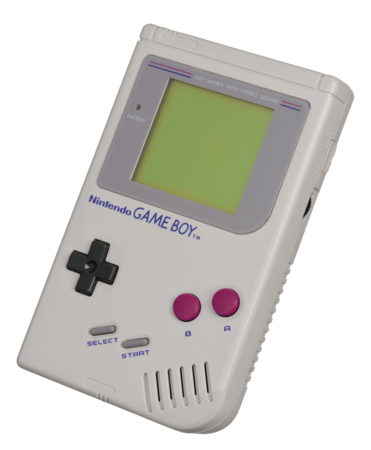
Produttore:
Nintendo
Commercializzazione:
–
Paese di produzione:
Giappone
Descrizione:
Il Game Boy è una console portatile per videogiochi monocromatica realizzata dal gruppo Nintendo Research &
Development 1, guidato da Gunpei Yokoi e Satoru Okada. A suo tempo divenne il sistema portatile di riferimento,
nonostante l'uscita di molti concorrenti più avanzati, ed è una delle icone più riconosciute della storia dei
videogiochi.
Questa fu la prima di una fortunata serie di console chiamate Game Boy, con una vita commerciale di più di
vent'anni. Dopo alcune varianti dell'originale, il primo successore vero e proprio fu il Game Boy Color.
SNES
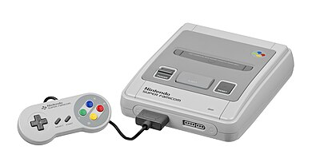
Produttore:
Nintendo
Commercializzazione:
–
Paese di produzione:
Giappone
Descrizione:
Il Super Nintendo Entertainment System (SNES), comunemente abbreviato in Super NES o Super Nintendo,
è una console per videogiochi a 16 bit. In Giappone, la console è chiamata col nome di Super Famicom.
Durante il suo ciclo di vita lo SNES ebbe un importante successo commerciale e divenne ben presto la console
più venduta e diffusa dell'epoca dei 16-bit, nonostante un inizio a rilento dovuto alla popolarità del
concorrente Sega Mega Drive, macchina con la quale competé per buona parte della sua storia.
N64
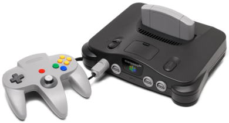
Produttore:
Nintendo
Commercializzazione:
–
Paese di produzione:
Giappone
Descrizione:
Il Nintendo 64 (abbreviato N64) è la console per videogiochi da tavolo succeduta allo SNES.
La console utilizza le cartucce, nonostante appartenga a un'epoca in cui questi supporti erano ormai divenuti
obsoleti per le console da tavolo e la concorrenza utilizzava il CD-ROM.
Il nome si riferisce ai 64 bit del suo microprocessore, sebbene il bus dati sia ridotto in realtà a 32 bit.
Si trattava di un sistema fortemente orientato alla grafica tridimensionale, grazie a un notevole coprocessore
grafico. Il Nintendo 64 ebbe buon successo, con oltre 32 milioni di unità vendute, ma sono molte meno rispetto
alla concorrente PlayStation e meno anche rispetto allo SNES.
Game Boy Color
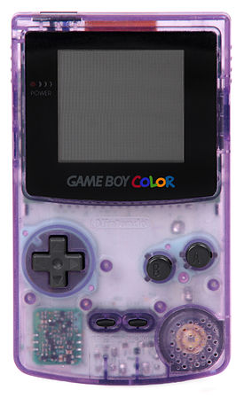
Produttore:
Nintendo
Commercializzazione:
–
Paese di produzione:
Giappone
Descrizione:
Il Game Boy Color, abbreviato in GBC, è una console portatile successore dell'originale
Nintendo Game Boy in bianco e nero.
Il GBC è dotato di uno schermo a colori non retroilluminato. È leggermente più spesso e più alto del
Game Boy Pocket, il suo immediato predecessore, presenta uno schermo leggermente più piccolo.
Come per il Game Boy originale, ha un processore a 8 bit personalizzato realizzato da Sharp che è
considerato un ibrido tra l'Intel 8080 e lo Zilog Z80.
Il Game Boy e il Game Boy Color hanno venduto insieme 118,69 milioni di unità in tutto il mondo,
rendendolo il terzo sistema più venduto di tutti i tempi.
Sg-1000
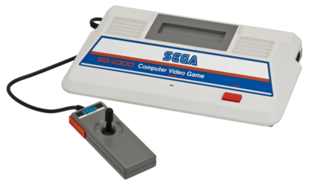
Produttore:
SEGA
Commercializzazione:
–
Paese di produzione:
Giappone
Descrizione:
SG-1000, nome completo Sega Computer Video Game SG-1000, è la prima console prodotta dalla SEGA.
Commercializzata esclusivamente in Giappone, Australia e in alcuni paesi europei (tra cui Italia e Spagna),
ha venduto poche unità e per questo motivo non è stata mai distribuita negli Stati Uniti d'America.
Sega Master System
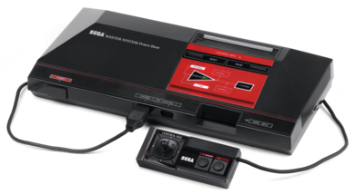
Produttore:
SEGA
Commercializzazione:
–
Paese di produzione:
Giappone
Descrizione:
Il Sega Master System, in Giappone Sega Mark III, è una console per videogiochi a 8 bit basata su cartucce.
Diretto successore del SG-1000, è stato lanciato sul mercato per competere con il Famicom prodotto da Nintendo.
Della console sono state vendute 13 milioni di unità, contro le oltre 60 milioni del concorrente.
Il Master System è considerato una delle piattaforme più longeve soprattutto per via della sua popolarità
in Brasile, qui commercializzato anche dopo i primi anni 2000.
Sega Mega Drive
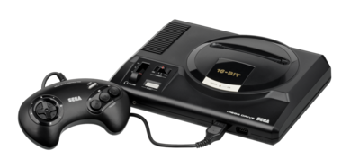
Produttore:
SEGA
Commercializzazione:
–
Paese di produzione:
Giappone
Descrizione:
Il Sega Mega Drive, commercializzato come Sega Genesis negli Stati Uniti d'America e come Super GameBoy
e Super Aladdin Boy in Corea del Sud, Inaugurò l'epoca delle console dotate di microprocessore a 16 bit,
basandosi sul Motorola 68000, all'epoca utilizzato da computer come l'Amiga.
È stato il secondo sistema dotato di lettore CD-ROM, grazie alla distribuzione da parte della casa nipponica
di un dispositivo esterno (il Sega Mega CD) che aggiungeva non solo una maggior capacità di memorizzazione ma
anche potenza di calcolo al sistema, permettendo di avere velocità maggiori, grafica più accurata e,
naturalmente, colonne sonore di qualità CD.
Il Mega Drive fu un grande successo, che la Sega non riuscì più a ripetere con le successive console.
Le stime sul numero di unità vendute sono variabili; per il totale mondiale viene spesso citata la cifra di
29 milioni, ma sembra più accurata la stima di quasi 39 milioni.
Si vendettero circa 18,5 milioni di unità in Nordamerica, 8,4 in Europa e 3,6 in Giappone.
Nonostante la console fosse riuscita a ottenere un grande successo in Nord America, Europa e Brasile, in
Giappone non riuscì a stare al passo con altre due console concorrenti, ovvero il PC Engine della NEC
Corporation e il Super Nintendo Entertainment System della Nintendo.
Game Gear
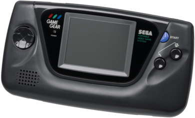
Produttore:
SEGA
Commercializzazione:
–
Paese di produzione:
Giappone
Descrizione:
Sviluppata con il nome in codice Project Mercury, la console venne lanciata sul mercato per competere il Game Boy,
lanciato sul mercato l'anno precedente da Nintendo, e dispone di uno schermo composto da un LCD a matrice
passiva a colori, dotato di retro-illuminazione.
Nonostante l'ambizione, in parte riuscita, di proporsi come una console che risolvesse i problemi del Game Boy,
il Game Gear non ebbe lo sperato successo commerciale a causa di alcuni motivi: mancanza di giochi, prezzo elevato
e scarsa autonomia (6 ore contro le 36 del rivale)
Sega Saturn
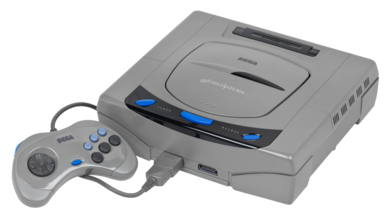
Produttore:
SEGA
Commercializzazione:
–
Paese di produzione:
Giappone
Descrizione:
Il Sega Saturn è una console, dopo un esaltante avvio, si posizionò al terzo posto nella guerra delle console,
ostacolato non tanto dal Nintendo 64, bensì dal successo della PlayStation. La console fu la prima della SEGA a
fare del Giappone il suo mercato principale, perdendo però la leadership in Europa e Nord America.
La macchina fu inoltre prodotta nel corso degli anni da Hitachi (HiSaturn), Samsung (SamsungSaturn) e JVC
(V-Saturn), poiché esse fornivano rispettivamente: processore, SSD e lettore CD.
Queste tre versioni si distinguevano comunque per i prezzi di listino molto più alti rispetto all'originale,
regola stabilita da SEGA stessa in fase di accordi.
VIC-20
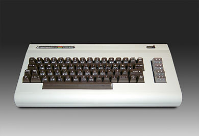
Produttore:
Commodore
Commercializzazione:
–
Paese di produzione:
Stati Uniti d'America
Descrizione:
Il Commodore VIC-20 è un home computer della Commodore Business Machines Inc. Fu prodotto in larga scala
dalla società dopo la presentazione di un primo modello al Consumer Electronics Show del 1980.
Fu soprannominato "the friendly computer", il computer amico, e commercializzato come computer per la
famiglia, per la casa, per il gioco, ad un prezzo relativamente contenuto, ovvero a meno di 300$
Commodore 64
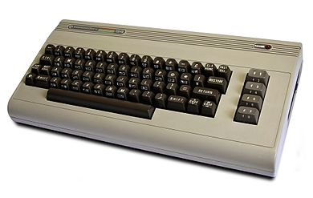
Produttore:
Commodore
Commercializzazione:
–
Paese di produzione:
Stati Uniti d'America
Descrizione:
Fu immesso sul mercato due anni dopo il Commodore VIC-20, con capacità di memoria,
grafiche e sonore superiori rispetto a quest'ultimo, oltre a una buona compatibilità con le sue periferiche.
La macchina venne venduta sino al fallimento della società, ed è stata la più venduta nella storia
dell'informatica, con diversi milioni di unità prodotte e vendute.
Il successivo Commodore 128 ne mantenne la compatibilità hardware e software grazie a una modalità dedicata.
Amiga 1000
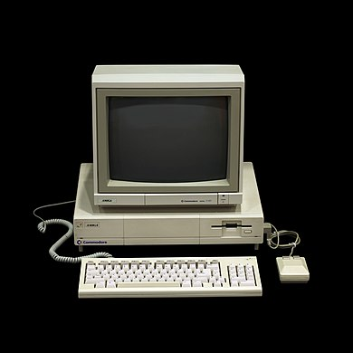
Produttore:
Commodore
Commercializzazione:
–
Paese di produzione:
Stati Uniti d'America
Descrizione:
È stato il primo personal computer casalingo ad offrire insieme le seguenti caratteristiche moderne:
multitasking con prelazione, interfaccia grafica WIMP a colori e mouse.
Utilizzava una delle più potenti CPU dei suo tempi e anche la grafica e l'hardware audio erano tra i più
avanzati della sua classe, il tutto gestito con 512 KiB di memoria.
Inizialmente il computer era denominato semplicemente "Amiga" o "Commodore Amiga"
("Amiga" era il nome della versione del computer destinata ai paesi utilizzanti lo standard televisivo NTSC,
"Commodore Amiga" il nome della versione del computer destinata ai paesi utilizzanti lo standard televisivo PAL).
Il nome fu cambiato in "Commodore Amiga 1000" solo a seguito della commercializzazione di altri computer della
stessa famiglia: l'Amiga 500 e l'Amiga 2000.
Playstation
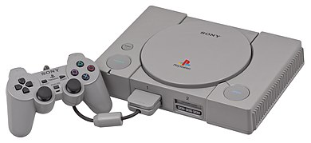
Produttore:
SONY
Commercializzazione:
–
Paese di produzione:
Giappone
Descrizione:
PlayStation segnò l'esordio di Sony nel campo delle console e fu un enorme successo dando inizio ad una rivoluzione
che modificò l'immagine delle console stesse per il grande pubblico, da prodotto pensato per un pubblico più giovane
a realtà tecnologica in grado di cambiare la quotidianità familiare. In questo senso erano già stati fatti iniziali
tentativi ma di scarso successo, come il CD-i e il 3DO; è parere diffuso che il successo di PlayStation sia dovuto
non solo alla elevata qualità e versatilità dell'hardware prodotto, ma soprattutto a una grande campagna pubblicitaria
senza precedenti in questo campo, con spot di forte impatto e originalità, che riuscì a interessare un'utenza molto
più vasta di quella tradizionale dei videogiochi. In tal modo Sony riuscì a primeggiare sui marchi storici del settore,
Nintendo e SEGA.